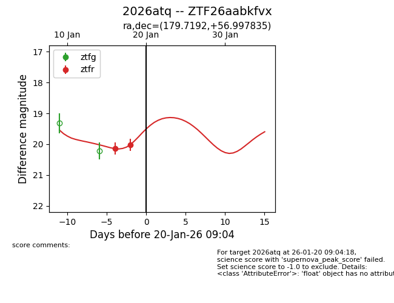
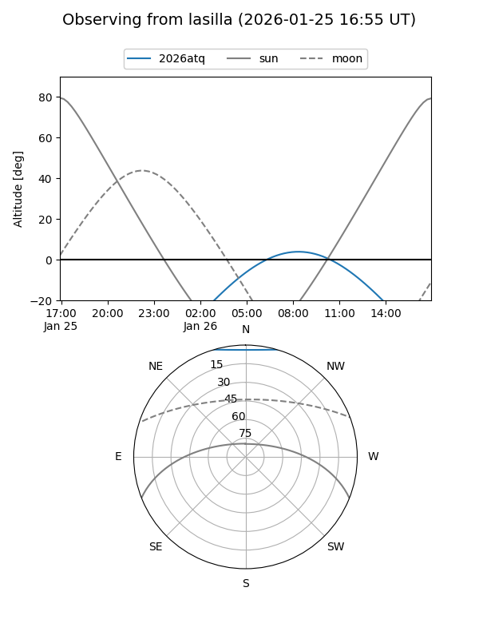
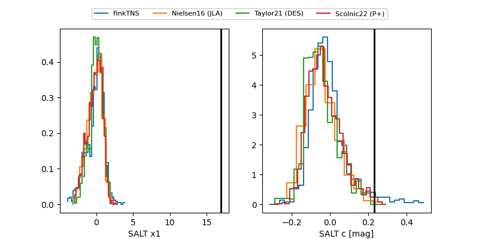

2026atq
Target 2026atq at 2026-01-26 12:06
Aliases and brokers:
FINK: link
Lasair: link
ALeRCE: link
TNS: link
YSE: link
alt names
ZTF26aabkfvx (ztf,fink_ztf)
2026atq (tns,yse)
Coordinates:
equatorial (ra, dec) = 179.7192,+56.99784
equatorial (HMS+DMS) = 11:58:52.60,+56:59:52.21
galactic (l, b) = (136.7211,+58.70109)
Flags:
Photometry:
last ztfg=20.17, ztfr=19.81
1 ztfg, 3 ztfr detections
Lightcurve

Visibility


Additional plots
